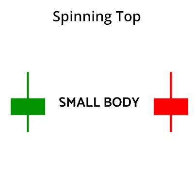

சுழலான டாப் முறை ஒரு மொம்பட்டி முறையானது, இது மார்க்கெட்டில் எதிர்முகம் அல்லது அது
மேலே அல்லது கீழே சாய்வதற்கான எண்ணை காட்டுகிறது. இந்த முறை ஒரு சிறிய
மொம்பட்டி மூலம் உருவாக்கப்பட்டுள்ளது மேல் அனைவரும் அல்லது உலக வாங்கும்
விலை சொத்து விலை வெவராக இல்லை.
சுழலான டாப் முறை ஒரு நியாயர் முறையாகும். இந்த முறையை பார்க்கும் போது,
மார்க்கெட்டில் மேல் அல்லது கீழே சாய்வதற்கு என்னையும் கொடுக்காது.
சுழலான டாப் முறையை சில நேரங்களில் "காலை நட்சத்திர முறை" என்று குழப்புகின்றனர்.
காலை நட்சத்திர முறை ஒரு மேலுப்புக் கணிப்பைக் கொடுக்கின்றது, அதன் வழியாக சுழலான
முறை எவ்வாறும் முன் காட்டுவதில்லை.